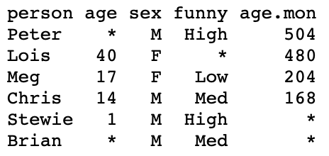

seq(1, 11, length.out = 6)[1] 1 3 5 7 9 11Appendix B
Functions are a class of objects
Format of a function is name followed by parentheses containing arguments
Functions take arguments and return a result
We already encountered several built in functions:
plot(x, y)lines(x, y)seq(x)print("Stats is great!")cat("R is great!")mean(x)sin(x)plot(x, y) has formal arguments two vectors x and yplot(height, weight) has actual arguments height and weightplot(height, weight) the arguments are matched:
height corresponds to x-variableweight corresponds to y-variableIf a function has a lot of arguments, positional matching is tedious
For example plot() accepts the following (and more!) arguments
| Argument | Description |
|---|---|
x |
x coordinate of points in the plot |
y |
y coordinate of points in the plot |
type |
Type of plot to be drawn |
main |
Title of the plot |
xlab |
Label of x axis |
ylab |
Label of y axis |
pch |
Shape of points |
Issue with having too many arguments is the following:
pch = 2pch
xytypexlabylabpch = 2 by the call
plot(weight, height, pch = 2)weight is implicitly matched to xheight is implicitly matched to ypch is explicitly matched to 2plot(x = weight, y = height, pch = 2)plot(height, weight)plot(x = height, y = weight)plot(y = weight, x = height)We have already seen another example of named actual arguments
seq(from = 1, to = 11, by = 2)seq(1, 11, 2)If however we want to divide the interval [1, 11] in 5 equal parts:
seq(1, 11, length.out = 6)seq(1, 11, 6)seq() is byseq(1, 11, 6) assumes that by = 6()getwd() – which outputs current working directoryls() – which outputs names of objects currently in memorymy_function is belowmy_function(arguments)The R function mean(x) computes the sample mean of vector x
We want to define our own function to compute the mean
Example: The mean of x could be computed via
sum(x) / length(x)We want to implement this code into the function my_mean(x)
my_mean takes vector x as argumentmy_mean returns a scalar – the mean of xmy_mean on an example# Generate a random vector of 1000 entries from N(0,1)
x <- rnorm(1000)
# Compute mean of x with my_mean
xbar <- my_mean(x)
# Compute mean of x with built in function mean
xbar_check <- mean(x)
cat("Mean of x computed with my_mean is:", xbar)
cat("Mean of x computed with R mean is:", xbar_check)
cat("They coincide!")Mean of x computed with my_mean is: -0.04140425Mean of x computed with R mean is: -0.04140425They coincide!Print and cat produce different output on character vectors:
print(x) prints all the strings in x separatelycat(x) concatenates strings. There is no way to tell how many were thereTRUE, FALSE or NATRUE and FALSE can be abbreviated with T and FNA stands for not availableLogical vectors are extremely useful to evaluate conditions
Example:
xt# Generate a vector containing sequence 1 to 8
x <- seq(from = 1 , to = 8, by = 1)
# Generate vector of flags for entries strictly above 5
y <- ( x > 5 )
cat("Vector x is: (", x, ")")
cat("Entries above 5 are: (", y, ")")Vector x is: ( 1 2 3 4 5 6 7 8 )Entries above 5 are: ( FALSE FALSE FALSE FALSE FALSE TRUE TRUE TRUE )Question: How to do this?
Hint: T/F are interpreted as 1/0 in arithmetic operations
sum(x) sums the entries of a vector xsum(x) to count the number of T entries in a logical vector xx <- rnorm(1000) # Generates vector with 1000 normal entries
y <- (x > 0) # Generates logical vector of entries above 0
above_zero <- sum(y) # Counts entries above zero
cat("Number of entries which are above the average 0 is", above_zero)
cat("This is pretty close to 500!")Number of entries which are above the average 0 is 509This is pretty close to 500!NA value - Not AvailableNA is carried through in computations: operations on NA yield NA as the resultComponents of a vector can be retrieved by indexing
vector[k] returns k-th component of vector
To modify an element of a vector use the following:
vector[k] <- value stores value in k-th component of vectorReturning multiple items of a vactor is known as slicing
vector[c(k1, ..., kn)] returns components k1, ..., knvector[k1:k2] returns components k1 to k2x can be deleted by using
x[ -c(k1, ..., kn) ] which deletes entries k1, ..., kn# Create a vector x
x <- c(11, 22, 33, 44, 55, 66, 77, 88, 99, 100)
# Print vector x
cat("Vector x is:", x)
# Delete 2nd, 3rd and 7th entries of x
x <- x[ -c(2, 3, 7) ]
# Print x again
cat("Vector x with 2nd, 3rd and 7th entries removed:", x)Vector x is: 11 22 33 44 55 66 77 88 99 100Vector x with 2nd, 3rd and 7th entries removed: 11 44 55 66 88 99 100Code: Suppose given a vector x
Create a flag vector by using
flag <- condition(x)condition() is any function which returns T/F vector of same length as x
Subset x by using
x[flag]x[ x < 0 ]# Create numeric vector x
x <- c(5, -2.3, 4, 4, 4, 6, 8, 10, 40221, -8)
# Get negative components from x and store them in neg_x
neg_x <- x[ x < 0 ]
cat("Vector x is:", x)
cat("Negative components of x are:", neg_x)Vector x is: 5 -2.3 4 4 4 6 8 10 40221 -8Negative components of x are: -2.3 -8a and b&
x[ (x > a) & (x < b) ]# Create numeric vector
x <- c(5, -2.3, 4, 4, 4, 6, 8, 10, 40221, -8)
# Get components between 0 and 100
range_x <- x[ (x > 0) & (x < 100) ]
cat("Vector x is:", x)
cat("Components of x between 0 and 100 are:", range_x)Vector x is: 5 -2.3 4 4 4 6 8 10 40221 -8Components of x between 0 and 100 are: 5 4 4 4 6 8 10which() allows to convert a logical vector flag into a numeric index vector
which(flag) is vector of indices of flag which correspond to TRUE# Create a logical flag vector
flag <- c(T, F, F, T, F)
# Indices for flag which
true_flag <- which(flag)
cat("Flag vector is:", flag)
cat("Positions for which Flag is TRUE are:", true_flag)Flag vector is: TRUE FALSE FALSE TRUE FALSEPositions for which Flag is TRUE are: 1 4which() can be used to delete certain entries from a vector x
Create a flag vector by using
flag <- condition(x)condition() is any function which returns T/F vector of same length as x
Delete entries flagged by condition using the code
x[ -which(flag) ]# Create numeric vector x
x <- c(5, -2.3, 4, 4, 4, 6, 8, 10, 40221, -8)
# Print x
cat("Vector x is:", x)
# Flag positive components of x
flag_pos_x <- (x > 0)
# Remove positive components from x
x <- x[ -which(flag_pos_x) ]
# Print x again
cat("Vector x with positive components removed:", x)Vector x is: 5 -2.3 4 4 4 6 8 10 40221 -8Vector x with positive components removed: -2.3 -8The main functions to generate vectors are
c() concatenateseq() sequencerep() replicateWe have already met c() and seq() but there are more details to discuss
Recall: c() generates a vector containing the input values
c() can also concatenate vectorsYou can assign names to vector elements
This modifies the way the vector is printed
Given a named vector x
names(x)unname(x)# Create named vector
x <- c(first = "Red", second = "Green", third = "Blue")
# Access names of x via names(x)
names_x <- names(x)
# Access values of x via unname(x)
values_x <- unname(x)
cat("Names of x are:", names(x))
cat("Values of x are:", unname(x))Names of x are: first second thirdValues of x are: Red Green Blueseq is
seq(from =, to =, by =, length.out =)by = 1seq(x1, x2) is equivalent to x1:x2x1:x2 is preferred to seq(x1, x2)# Generate two vectors of integers from 1 to 6
x <- seq(1, 6)
y <- 1:6
cat("Vector x is:", x)
cat("Vector y is:", y)
cat("They are the same!")Vector x is: 1 2 3 4 5 6Vector y is: 1 2 3 4 5 6They are the same!rep generates repeated values from a vector:
x vectorn integerrep(x, n) repeats n times the vector x# Create a vector with 3 components
x <- c(2, 1, 3)
# Repeats 4 times the vector x
y <- rep(x, 4)
cat("Original vector is:", x)
cat("Original vector repeated 4 times:", y)Original vector is: 2 1 3Original vector repeated 4 times: 2 1 3 2 1 3 2 1 3 2 1 3The second argument of rep() can also be a vector:
x and y vectorsrep(x, y) repeats entries of x as many times as corresponding entries of yx <- c(2, 1, 3) # Vector to replicate
y <- c(1, 2, 3) # Vector saying how to replicate
z <- rep(x, y) # 1st entry of x is replicated 1 time
# 2nd entry of x is replicated 2 times
# 3rd entry of x is replicated 3 times
cat("Original vector is:", x)
cat("Original vector repeated is:", z)Original vector is: 2 1 3Original vector repeated is: 2 1 1 3 3 3rep() can be useful to create vectors of labelsVectors can contain only one data type (number, character, boolean)
Lists are data structures that can contain any R object
Lists can be created similarly to vectors, with the command list()
Elements of a list can be retrieved by indexing
my_list[[k]] returns k-th element of my_listYou can return multiple items of a list via slicing
my_list[c(k1, ..., kn)] returns elements in positions k1, ..., knmy_list[k1:k2] returns elements k1 to k2names(my_list) <- c("name_1", ..., "name_k")# Create list with 3 elements
my_list <- list(2, c(T,F,T,T), "hello")
# Name each of the 3 elements
names(my_list) <- c("number", "TF_vector", "string")
# Print the named list: the list is printed along with element names
print(my_list)$number
[1] 2
$TF_vector
[1] TRUE FALSE TRUE TRUE
$string
[1] "hello"my_list named my_name can be accessed with dollar operator
my_list$my_name# Create list with 3 elements and name them
my_list <- list(2, c(T,F,T,T), "hello")
names(my_list) <- c("number", "TF_vector", "string")
# Access 2nd element using dollar operator and store it in variable
second_component <- my_list$TF_vector
# Print 2nd element
print(second_component)[1] TRUE FALSE TRUE TRUEData Frames are the best way of presenting a data set in R:
Data frames can contain any R object
Data Frames are similar to Lists, with the difference that:
Data frames are constructed similarly to lists, using data.frame()
Important: Elements of data frame must be vectors of the same length
Example: We construct the Family Guy data frame. Variables are
person – Name of characterage – Age of charactersex – Sex of characterThink of a data frame as a matrix
You can extract element in position (m,n) by using
my_data[m, n]Example: Peter is in 1st row. We can extract Peter’s name as follows
[1] "Peter"To extract multiple elements on the same row or column type
my_data[c(k1,...,kn), m] \quad or \quad my_data[k1:k2, m]my_data[n, c(k1,...,km)] \quad or \quad my_data[n, k1:k2]Example: Meg is listed in 3rd row. We extract her age and sex
age sex
3 17 FTo extract entire rows or columns type
my_data[c(k1,...,kn), ] \quad or \quad my_data[k1:k2, ]my_data[, c(k1,...,km)] \quad or \quad my_data[, k1:k2]peter_data <- family[1, ] # Extracts first row - Peter
sex_age <- family[, c(3,2)] # Extracts third and second columns:
# sex and age
print(peter_data)
print(sex_age) person age sex
1 Peter 42 M sex age
1 M 42
2 F 40
3 F 17
4 M 14
5 M 1Use dollar operator to access data frame columns
my_data contains a variable called my_variablemy_data$my_variable accesses column my_variablemy_data$my_variable is a vectorExample: To access age in the family data frame type
ages <- family$age # Stores ages in a vector
cat("Ages of the Family Guy characters are", ages)
cat("Meg's age is", ages[3])Ages of the Family Guy characters are 42 40 17 14 1Meg's age is 17The size of a data frame can be discovered using:
nrow(my_data) \quad number of rowsncol(my_data) \quad number of columnsdim(my_data) \quad \quad vector containing number of rows and columnsfamily_dim <- dim(family) # Stores dimensions of family in a vector
cat("The Family Guy data frame has", family_dim[1],
"rows and", family_dim[2], "columns")The Family Guy data frame has 5 rows and 3 columnsAdding data to an existing data frame my_data
new_recordnew_record must match the structure of my_datamy_data with my_data <- rbind(my_data, new_record)new_variablenew_variable must have as many components as rows in my_datamy_data with my_data <- cbind(my_data, new_variable)familynew_record to family person age sex
1 Peter 42 M
2 Lois 40 F
3 Meg 17 F
4 Chris 14 M
5 Stewie 1 M
6 Brian 7 Mfamilyfunnyfunny with entries matching each character (including Brian)funny to the Family Guy data frame family person age sex funny
1 Peter 42 M High
2 Lois 40 F High
3 Meg 17 F Low
4 Chris 14 M Med
5 Stewie 1 M High
6 Brian 7 M MedInstead of using cbind we can add a new varibale using dollar operator:
new_variablev containing values for the new variablev must have as many components as rows in my_datamy_data with my_data$new_variable <- vExample:
familyfamily$age by 12v <- family$age * 12 # Computes vector of ages in months
family$age.months <- v # Stores vector as new column in family
print(family) person age sex funny age.months
1 Peter 42 M High 504
2 Lois 40 F High 480
3 Meg 17 F Low 204
4 Chris 14 M Med 168
5 Stewie 1 M High 12
6 Brian 7 M Med 84We saw how to use logical flag vectors to subset vectors
We can use logical flag vectors to subset data frames as well
Suppose to have data frame my_data containing a variable my_variable
Want to subset records in my_data for which my_variable satisfies a condition
Use commands
flag <- condition(my_data$my_variable)my_data[flag, ]Example:
familyfamily$sex == "M"# Create flag vector for male Family Guy characters
flag <- (family$sex == "M")
# Subset data frame "family" and store in data frame "subset"
subset <- family[flag, ]
# Print subset
print(subset) person age sex funny age.months
1 Peter 42 M High 504
4 Chris 14 M Med 168
5 Stewie 1 M High 12
6 Brian 7 M Med 84R has a many functions for reading characters from stored files
We will see how to read Table-Format files
Table-Formats are just tables stored in plain-text files
Typical file estensions are:
.txt for plain-text files.csv for comma-separated valuesTable-Formats can be read into R with the command
read.table()NA#
*read.table()
.txt or .csv file and outputs a data frameread.table()
header = T/F – Tells R if a header is presentna.strings = "string" – Tells R that "string" means NATo read family_guy.txt into R proceed as follows:
Download family_guy.txt and move file to Desktop
Open the R Console and change working directory to Desktop
family_guy.txt into R and store it in data frame family with coderead.table() that
family_guy.txt has a header*family to screen person age sex funny age.mon
1 Peter NA M High 504
2 Lois 40 F <NA> 480
3 Meg 17 F Low 204
4 Chris 14 M Med 168
5 Stewie 1 M High NA
6 Brian NA M Med NA.txt fileExample: Analysis of Consumer Confidence Index for 2008 crisis from Lecture 4
c().txt file insteadGoal: Perform t-test on CCI difference for mean difference \mu = 0
read.table()The CCI dataset can be downloaded here 2008_crisis.txt
The text file looks like this
To perform the t-test on data 2008_crisis.txt we proceed as follows:
Download dataset 2008_crisis.txt and move file to Desktop
Open the R Console and change working directory to Desktop
2008_crisis.txt into R and store it in data frame scores with codescores into 2 vectors# CCI from 2007 is stored in 2nd column
score_2007 <- scores[, 2]
# CCI from 2009 is stored in 3nd column
score_2009 <- scores[, 3]t.test is below
One Sample t-test
data: difference
t = 38.144, df = 11, p-value = 4.861e-13
alternative hypothesis: true mean is not equal to 0
95 percent confidence interval:
68.15960 76.50706
sample estimates:
mean of x
72.33333 They should be meaningful and end in .R
_) to separate words within a nameBigCamelCase (link)If possible avoid using names of existing functions and variables
Use <- and not = for assignment
=, +, -, <-, etc.)= when calling a function:, :: and ::: do not need spacingExtra spacing is ok if it improves alignment of = or <-
If a function definition runs over multiple lines, indent the second line to where the definition starts
return(object)Often you can call a function without explicitly naming arguments:
plot(height, weight)mean(weight)This might be fine for plot() or mean
However for less common functions:
Comments
#and a single space-and=to break up code into easily readable chunksHomepage License Contact